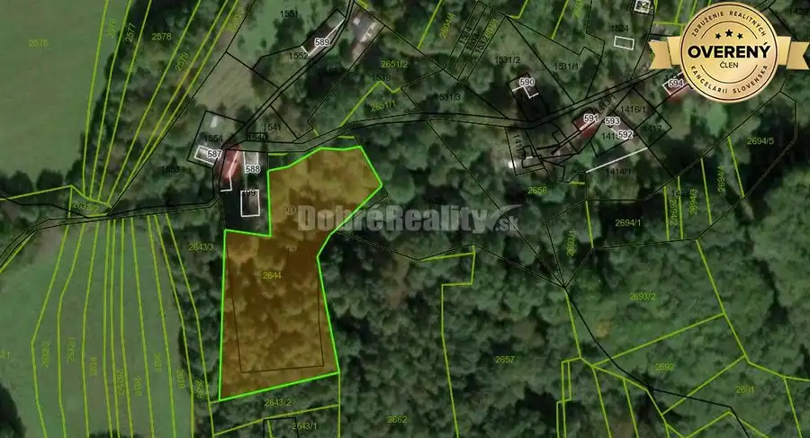

Rodinný dom s veľkým pozemkom v tichom a krásnom prostredí pod Považs
Selec
- Dispozícia3-izbový
- Plocha110 m²
- Stavpôvodný
- Vlastníctvoosobné
O nehnuteľnosti
Ponúkame Vám na predaj útulný rodinný dom 3+1 s veľkorysým pozemkom v malebnej obci Selec, ktorá sa nachádza v pokojnom a nádhernom prostredí pod majestátnym Považským Inovcom.
Táto nehnuteľnosť je ideálnou voľbou pre rodiny túžiace po súkromí, blízkosti prírody a zároveň dostupnosti všetkej občianskej vybavenosti.Pred domom je predzáhradka .V zadnej časti pozemku za nachádza ovocná záhrada.
Tento kvalitný rodinný dom bol postavený v 60. rokoch minulého storočia a ponúka veľký potenciál pre tých, ktorí hľadajú nehnuteľnosť s možnosťou úpravy podľa vlastných predstáv a potrieb. Dom nie je podpivničený a disponuje jedným nadzemným podlažím a podkrovím, čo vytvára príjemný a priestorný domov pre celú rodinu.
Rodinný dom nie je podpivničený s jedným nadzemný podlažím a podkrovím.
Dom je v pôvodnom stave.
POZEMOK A ZÁHRADA
Jednou z najväčších predností tejto nehnuteľnosti je veľkorysý pozemok s výmerou 1 327 m², ktorý ponúka neobmedzené možnosti využitia:
Predzáhradka pred domom - príjemný priestor na oddych a relax
Ovocná záhrada v zadnej časti pozemku - pre milovníkov pestovania vlastnej zeleniny a ovocia
Dostatok priestoru pre deti na hranie, pre domáce zvieratá, altánok, záhradný domček či letné posedenie s rodinou a priateľmi
TECHNICKÉ VYBAVENIE
Dom je plne napojený na všetky potrebné inžinierske siete:
Voda - verejný vodovod
Kanalizácia - pripojenie na kanalizáciu
Plyn - plynové kúrenie s medenými rozvodmi
Elektrina - elektrická prípojka
Vykurovanie domu je zabezpečené plynovým kúrením s medenými rozvodmi, čo zaručuje efektívne a ekonomické vykurovanie počas celého roka.
Na prízemí sa nachádza chodba, 2 obytné miestnosti, kúpeľňa, WC samostatná kuchyňa, špajza a schodisko do podkrovia a kotolňa. V podkroví sa nachádza 1 obytná miestnosť s balkónom a neobytný podkrovný priestor.
Do domu sú dotiahnuté inžnierske siete: voda, kanalizácia, plyn, elektrika.Kúrenie je plynové, medené rozvody.
V obci sú potraviny, škola, škôlka, pravidelná autobusová doprava do okolitých obcí a Trenčína, vzdialenosť od Trenčína 14 km.
Tento rodinný dom v Selci predstavuje výnimočnú príležitosť pre tých, ktorí hľadajú nehnuteľnosť s veľkým pozemkom v pokojnom prírodnom prostredí, no zároveň s výbornou dostupnosťou do mesta. Dom v pôvodnom stave ponúka priestor pre vlastnú kreativitu a možnosť vytvoriť si domov presne podľa svojich predstáv.
PRE KOHO JE TÁTO NEHNUTEĽNOSŤ IDEÁLNA?
Pre rodiny s deťmi - veľký pozemok, bezpečné prostredie, škola a škôlka v obci
Pre milovníkov záhradkárčenia - ovocná záhrada a dostatok priestoru na pestovanie
Pre rekonštruktorov - dom v pôvodnom stave s možnosťou úpravy podľa vlastných predstáv
Pre tých, čo hľadajú pokoj a prírodu - tichá lokalita pod Považským Inovcom s výbornou dostupnosťou
Pre investorov - atraktívna cena a potenciál zhodnotenia po rekonštrukcii
Či už plánujete rekonštrukciu na moderný rodinný dom, alebo hľadáte zázemie pre pokojný život na vidieku s možnosťou pestovania vlastnej zeleniny a ovocia, táto nehnuteľnosť má potenciál stať sa Vaším vysnívaným domovom.
Parametre
| Rozloha pozemku | 1299 m² |
|---|---|
| Zastavaná plocha | 110 m² |
| Úžitková plocha | 110 m² |
| Počet poschodí | 1 |
| Počet izieb | 3 |
| Vlastníctvo | osobné |
| Stav | pôvodný |
| Voda | nie |
| El. napätie | 230/400V |
| Plyn | nie |
| Kanalizácia | nie |
| Internet | nie |
| Kúpeľňa | áno |
| Vykurovanie | spoločné |
| Balkón | áno - 1 |
| Postavené z | tehla |
| Káblová televízia | nie |
| Energetický certifikát | nie |
| Predzáhradka | áno |
| Terén | rovina |
| Prístupová cesta | asfaltová cesta |
| Dátum zverejnenia | 28. 10. 2025 |
Kde to je
Mohlo by Vás zaujímať
 Rodinné domy10
96 000 €Predaj veľkého stavebného pozemku s rodinným domom za cenu pozemku – n
Neporadza
120 m²
Ponúkame Vám na predaj veľkorysý stavebný pozemok s rodinným domom za cenu samotného pozemku v krásnom a tichom prostredí malebnej obce Neporadza.…
Rodinné domy10
96 000 €Predaj veľkého stavebného pozemku s rodinným domom za cenu pozemku – n
Neporadza
120 m²
Ponúkame Vám na predaj veľkorysý stavebný pozemok s rodinným domom za cenu samotného pozemku v krásnom a tichom prostredí malebnej obce Neporadza.…
 Záhrady3
8 863 €Na predaj pozemok pod Machnáčom v krásnom horskom prostredí Bielych Ka
Drietoma
8863 m²
Ponúkame na predaj krásny veľký pozemok o výmere 8063 m2 v k.ú. obce Drietoma , časť Brúsne. Predávaná plocha sa skladá zo štyroch parciel tri z nich…
Záhrady3
8 863 €Na predaj pozemok pod Machnáčom v krásnom horskom prostredí Bielych Ka
Drietoma
8863 m²
Ponúkame na predaj krásny veľký pozemok o výmere 8063 m2 v k.ú. obce Drietoma , časť Brúsne. Predávaná plocha sa skladá zo štyroch parciel tri z nich…

Záhrady2 5 563 €Na predaj veľký rekreačný pozemok v horskom prostredí. Drietoma 5563 m² Ponúkame na predaj krásny veľký pozemok o výmere 5563 m2 v k.ú. obce Drietoma , časť Brúsne. Jedná sa o pozemok evidovaný v katastri ako záhrada.…